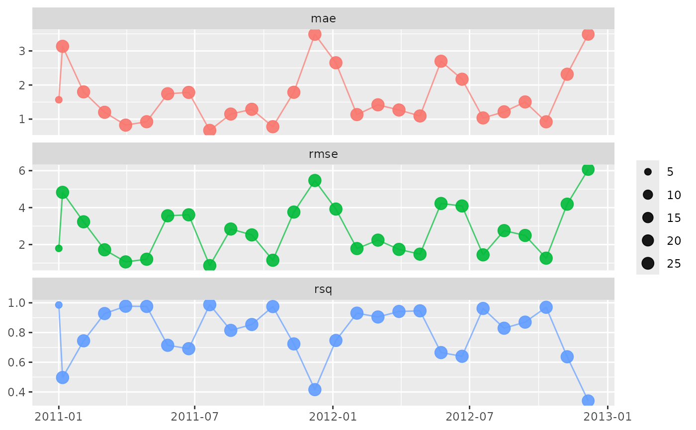

These three functions can be used for model monitoring (such as in a monitoring dashboard):
vetiver_compute_metrics()computes metrics (such as accuracy for a classification model or RMSE for a regression model) at a chosen time aggregationperiodvetiver_pin_metrics()updates an existing pin storing model metrics over timevetiver_plot_metrics()creates a plot of metrics over time
Usage
vetiver_plot_metrics(
df_metrics,
.index = .index,
.estimate = .estimate,
.metric = .metric,
.n = .n
)Arguments
- df_metrics
A tidy dataframe of metrics over time, such as created by
vetiver_compute_metrics().- .index
The variable in
df_metricscontaining the aggregated dates or date-times (fromtime_varindata). Defaults to.index.- .estimate
The variable in
df_metricscontaining the metric estimate. Defaults to.estimate.- .metric
The variable in
df_metricscontaining the metric type. Defaults to.metric.- .n
The variable in
df_metricscontaining the number of observations used for estimating the metric.
Examples
library(dplyr)
library(parsnip)
data(Chicago, package = "modeldata")
Chicago <- Chicago %>% select(ridership, date, all_of(stations))
training_data <- Chicago %>% filter(date < "2009-01-01")
testing_data <- Chicago %>% filter(date >= "2009-01-01", date < "2011-01-01")
monitoring <- Chicago %>% filter(date >= "2011-01-01", date < "2012-12-31")
lm_fit <- linear_reg() %>% fit(ridership ~ ., data = training_data)
library(pins)
b <- board_temp()
## before starting monitoring, initiate the metrics and pin
## (for example, with the testing data):
original_metrics <-
augment(lm_fit, new_data = testing_data) %>%
vetiver_compute_metrics(date, "week", ridership, .pred, every = 4L)
pin_write(b, original_metrics, "lm_fit_metrics", type = "arrow")
#> Creating new version '20240719T193102Z-4eb11'
#> Writing to pin 'lm_fit_metrics'
## to continue monitoring with new data, compute metrics and update pin:
new_metrics <-
augment(lm_fit, new_data = monitoring) %>%
vetiver_compute_metrics(date, "week", ridership, .pred, every = 4L)
vetiver_pin_metrics(b, new_metrics, "lm_fit_metrics")
#> Replacing version '20240719T193102Z-4eb11' with '20240719T193102Z-bd441'
#> Writing to pin 'lm_fit_metrics'
#> # A tibble: 162 × 5
#> .index .n .metric .estimator .estimate
#> <date> <int> <chr> <chr> <dbl>
#> 1 2009-01-01 7 rmse standard 6.78
#> 2 2009-01-01 7 rsq standard 0.154
#> 3 2009-01-01 7 mae standard 5.25
#> 4 2009-01-08 28 rmse standard 4.61
#> 5 2009-01-08 28 rsq standard 0.576
#> 6 2009-01-08 28 mae standard 2.98
#> 7 2009-02-05 28 rmse standard 1.90
#> 8 2009-02-05 28 rsq standard 0.916
#> 9 2009-02-05 28 mae standard 1.17
#> 10 2009-03-05 28 rmse standard 1.24
#> # ℹ 152 more rows
library(ggplot2)
vetiver_plot_metrics(new_metrics) +
scale_size(range = c(2, 4))
